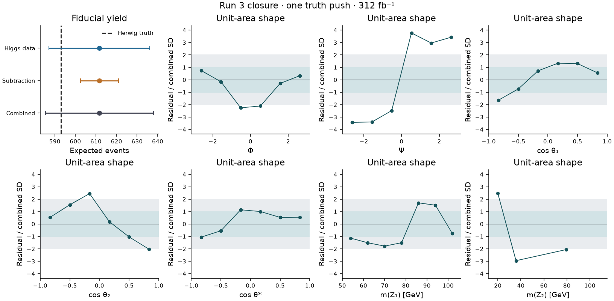
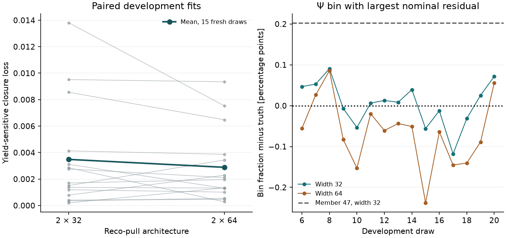

Research slides · Plot gallery · High-statistics iteration study
Run 3 closure with one OmniFold iteration
Ordinary OmniFold unfolds the seven decay observables using undeformed signed Pythia ggH simulation and the fitted background removal. The pseudo-data come from Herwig at 312 fb⁻¹ with cHB = +0.1 at Λ = 1 TeV. Member 47 is the previously selected working nominal.
The independent width comparison selected two layers of 64 neurons. The two uncertainty ensembles are being evaluated at that setting.
Pilot width 32 · yield and seven fiducial shapes
The unfolded fiducial yield is 611.69 events versus 592.87 for injected Herwig. Varying the Higgs-window data gives a standard deviation of 24.53 events. Refitting the sideband subtraction gives 9.20. Their quadrature sum is 26.20, putting the yield difference at 0.72 standard deviations.
The largest shape residual is 3.78 standard deviations in 0 ≤ Ψ < π/3. The approximate simultaneous 95% threshold across the yield and all 40 shape bins is 3.14. The nominal result passes the yield check and exceeds the simultaneous shape threshold.

In the largest-residual Ψ bin, Herwig puts 16.634% of fiducial events, original Pythia 16.667%, and the unfolding 16.837%. The data and background-removal spreads are 0.049 and 0.021 percentage points. The finite-template standard errors are 0.020 points for Herwig and 0.014 points for unfolded Pythia with fixed weights. The plotted bands hold both simulation templates fixed.
Across 100 different Higgs-window data draws at the same nominal subtraction, 30 pass the combined 95% simultaneous check when each tested draw is left out of both spread estimates. This describes performance conditional on the chosen subtraction. A repeated experiment varying both inputs and refitting them together would be needed to measure joint coverage.
Projection-by-projection comparison and definition of the simultaneous test
| Observable | Bins | Largest |residual| / SD | 95% within-projection threshold |
|---|---|---|---|
| Φ | 6 | 2.26 | 2.22 |
| Ψ | 6 | 3.78 | 2.09 |
| cos θ₁ | 6 | 1.64 | 2.31 |
| cos θ₂ | 6 | 2.45 | 2.48 |
| cos θ* | 6 | 1.15 | 2.24 |
| m(Z₁) | 7 | 1.78 | 2.22 |
| m(Z₂) | 3 | 2.96 | 2.17 |
Each of the 100 Higgs-window draws is unfolded with the same nominal correction and purity. Each of the 100 sideband corrections and purity fits is applied to the same nominal Higgs-window data. Both ensembles include the original member indices. Bins group four fine bins, merging sparse tails to retain at least two expected truth events. Uncertainty uses the replica standard deviation rather than the standard error of the replica mean.
The combined estimate assumes independent additive fluctuations about the nominal result. Centering each conditional ensemble and adding all pairs of fluctuation vectors preserves within-ensemble correlations across the rate and normalized shapes. The 95th percentile of the largest absolute standardized residual calibrates the simultaneous comparison. The 10,000 combinations reuse the same 100 draws per arm. Nonlinear interactions between data and subtraction, finite simulation and detector or theory nuisances are outside these bands.
Reco-pull hyperparameter optimization
With one iteration fixed, the fresh 15-draw mean closure losses were 0.003482 for width 32 and 0.002884 for width 64. The paired difference (32 minus 64) is +0.000598 ± 0.000517 standard error. The prespecified rule selects two layers of 64 neurons. The first uncertainty results on this page describe the width-32 pilot.
The pilot compared widths 32 and 64 on five development draws. The extension used the remaining draws 6–20, with identical data, subtraction and simulation for each pair. Each of the three stages uses four networks. The optimizer allows at most 64 updates per member, with signed weights and zero weight decay. The validation checkpoint uses held-out BCE. The working width changes to 64 only if its mean improvement exceeds one paired standard error on the 15 fresh draws. Architecture selection uses the original loss over seven absolute-yield projections and separate development truth.

At width 32, 0 of the 15 fresh draws have a Ψ residual in this bin at least as large in magnitude as member 47. At width 64 the count is 1. This bin-level check was added after inspecting member 47 and has no role in width selection.
Training diagnostics
Open a draw to inspect the four-network ensemble at iteration 1. Each PDF contains loss, held-out reweighting, raw score calibration, score distributions and member-level closure, for reco pull, truth push and reco likelihood in that order.
| Stage | Validation BCE range | Mean shape weight range | Within baseline tolerance |
|---|---|---|---|
| Reco pull | 0.6898–0.6944 | 0.9724–1.0085 | 30/30 |
| Truth push | 0.6922–0.6931 | 0.9970–1.0035 | 30/30 |
| Reco likelihood | 0.6922–0.6931 | 0.9958–1.0025 | 30/30 |
| Development draw | Width 32 | Width 64 |
|---|---|---|
| 6 | pull · push · likelihood | pull · push · likelihood |
| 7 | pull · push · likelihood | pull · push · likelihood |
| 8 | pull · push · likelihood | pull · push · likelihood |
| 9 | pull · push · likelihood | pull · push · likelihood |
| 10 | pull · push · likelihood | pull · push · likelihood |
| 11 | pull · push · likelihood | pull · push · likelihood |
| 12 | pull · push · likelihood | pull · push · likelihood |
| 13 | pull · push · likelihood | pull · push · likelihood |
| 14 | pull · push · likelihood | pull · push · likelihood |
| 15 | pull · push · likelihood | pull · push · likelihood |
| 16 | pull · push · likelihood | pull · push · likelihood |
| 17 | pull · push · likelihood | pull · push · likelihood |
| 18 | pull · push · likelihood | pull · push · likelihood |
| 19 | pull · push · likelihood | pull · push · likelihood |
| 20 | pull · push · likelihood | pull · push · likelihood |
Original five development draws and nominal member 47 diagnostics · Original conditional percentile bands